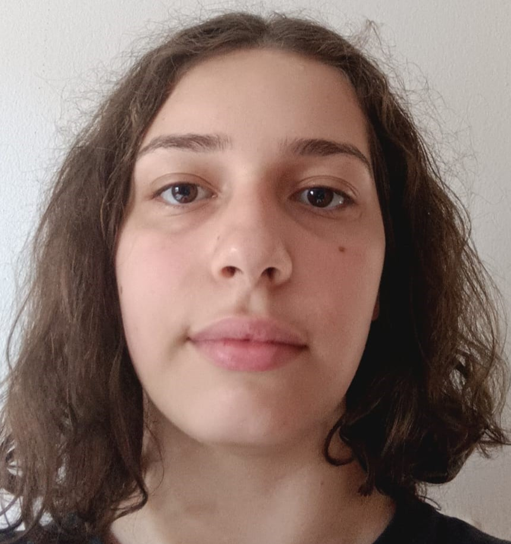
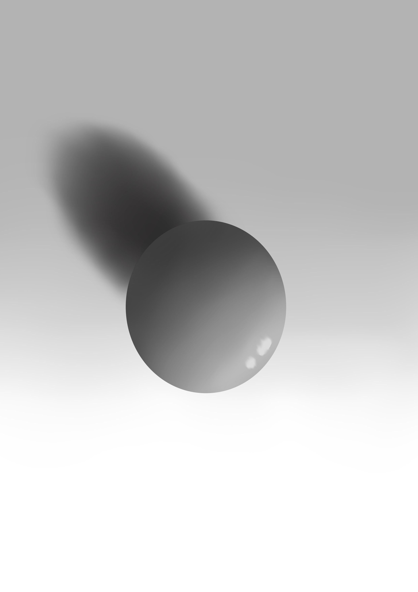

Universitária da Fatec
Sou ingressante primeiro semestre na fatec em Desenvolvimento de Software Multiplataforma

Sobre mim
Olá, meu nome é Maria Clara Cardoso Costa.
Eu tenho 17 anos e acabei de me formar no ensino médio, eu não tenho muito conhecimento sobre programação
mas essa área sempre me interessou e por isso eu me ingressei na FATEC de Franca, aqui
eu tenho aprendido mais e mais a cada dia, como por exemplo, essas bolas aqui.


Essas bolas são dois dos meus primeiros desenhos digitais feitos por mim em aula,
elas são feitas para aprender e praticar luzes, sombras e texturas para ajudar na criação de desings de sites.
Contatos

 Contatos
Sobre mim
Início
Contatos
Sobre mim
Início